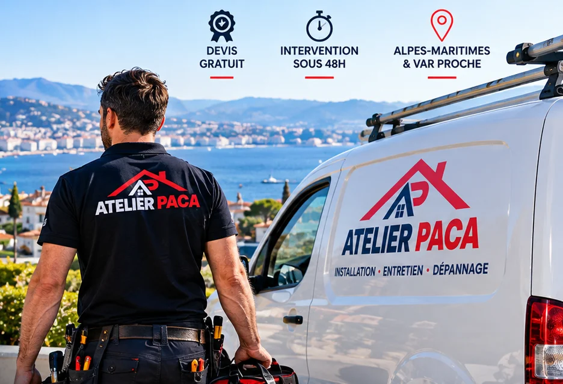
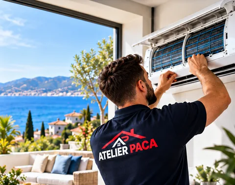
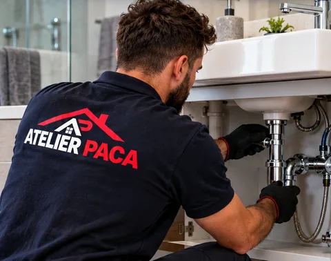
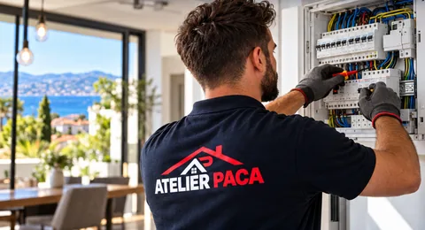
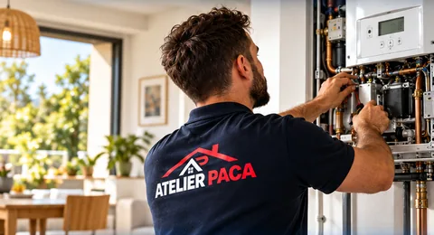
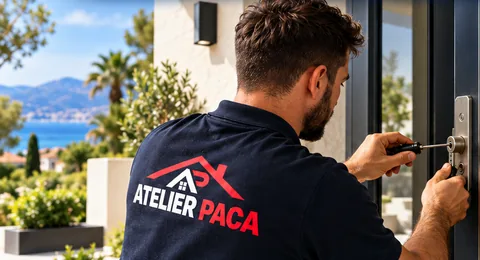
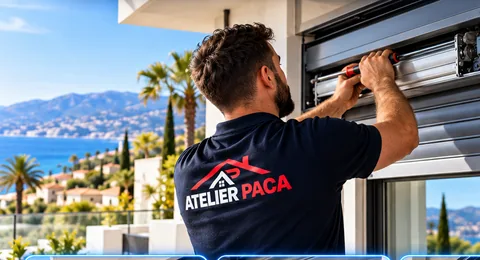
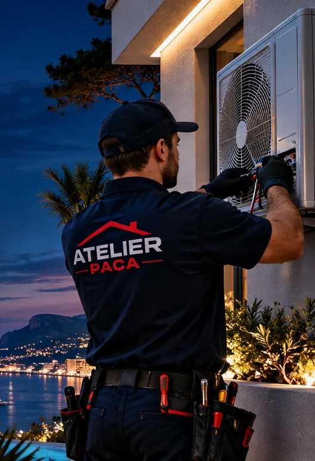

Plombier, chauffagiste, électricien à AntibesUn seul numéro pour toute votre maison.
Plomberie, chauffage, climatisation, électricité, volets roulants et serrurerie : une équipe locale basée à Antibes, avec des agences à Juan-les-Pins, Cagnes-sur-Mer et Le Cannet, qui dépanne, entretient et installe dans les Alpes-Maritimes et le Var est. Intervention sous 48 h, urgences 24h/24, devis gratuit.

Nos métiers
Dépannage et travaux dans les Alpes-Maritimes : six métiers, une seule équipe
Chaque technicien est spécialisé dans son métier : plombier, chauffagiste, frigoriste, électricien, technicien volets, serrurier. Ensemble, ils couvrent tout ce qui peut tomber en panne chez vous, sans que vous ayez à coordonner trois artisans.

Climatisation
Pose mono-split, multi-split et gainable, entretien annuel dès 110 € HT par split, dépannage toutes marques sous 48 h. Visite technique gratuite.

Plomberie
Fuite d'eau, débouchage, chauffe-eau, robinetterie et rénovation de salle de bain. Dépannage plomberie 24h/24, prix annoncé avant intervention.

Électricité
Panne de courant, tableau électrique, mise aux normes NF C 15-100, prises, éclairage, borne de recharge. Électriciens habilités, dépannage 7j/7.

Chauffage
Dépannage et entretien de chaudière avec attestation, pompe à chaleur, radiateurs et ballons d'eau chaude. Intervention prioritaire en hiver.

Serrurerie
Porte claquée, serrure bloquée, effraction : ouverture sans casse, remplacement de serrure et blindage. Prix annoncé au téléphone, 24h/24.

Volets roulants
Volet bloqué, moteur Somfy en panne, lames cassées, motorisation d'un volet manuel. Réparation 7j/7 toutes marques, pose sur mesure.
Entretien de chaudière avec attestation
Nettoyage, réglage, contrôle sécurité et CO. Obligatoire chaque année pour le gaz, et la meilleure assurance contre la panne du premier soir froid.
Contrat d'entretien clim ou chaudière
Visite annuelle programmée, dépannage sous 48 h, 10 % de remise sur les pièces détachées. Vous n'y pensez plus, on s'en occupe.
Pourquoi Atelier PACA
Pourquoi choisir un artisan d'Antibes plutôt qu'un dépanneur anonyme
Fuite d'eau, panne de chauffage, clim en panne, tableau électrique, volet bloqué, porte claquée : le même numéro, la même équipe, et une seule facture quand plusieurs métiers sont nécessaires.
Tarif annoncé au téléphone ou sur devis avant toute intervention, nuit et week-end compris. Tarif minimum 110 € HT, majoration éventuelle dite avant le déplacement. Pas de surprise à la fin.
Siège à Antibes, agences à Juan-les-Pins, Cagnes-sur-Mer et Le Cannet, plus de 10 800 interventions : nos techniciens connaissent les copropriétés, les villas, l'air salin et l'eau calcaire de la côte.
Daikin, Mitsubishi Electric, Atlantic, Somfy, Legrand, Schneider : du matériel qui dure, posé par des techniciens formés, garanti 10 ans, avec une facture détaillée pour votre assurance.

Avis clients
4,9/5 sur 178 avis Google
Quatre fiches Google, plus de 450 avis au total. Les avis sont publics et vérifiables sur chaque fiche.
« Installation de ma clim split impeccable à Antibes. Technicien ponctuel, soigneux et très professionnel. »
« Panne de clim en pleine canicule. Appel à 8h, technicien sur place à 11h. Équipe très réactive, bravo ! »
« Devis gratuit en 2h, installation soignée en une journée. Prix honnête et artisans certifiés. Très satisfait. »
Comment ça se passe
Votre dépannage ou vos travaux en quatre étapes
Téléphone, WhatsApp ou formulaire. Un technicien vous répond sous 2 h en journée, immédiatement pour une urgence, et vous donne les premiers gestes à faire.
Le technicien évalue le besoin et fixe un prix ferme, validé avant de commencer. Pour les travaux, visite technique et devis gratuits sous 24 h.
Pièces courantes en stock pour finir en une visite, protection des lieux, travail dans les règles de l'art, chantier laissé propre.
Facture détaillée pour votre assurance ou votre syndic, garantie décennale, et une équipe joignable après l'intervention.
Zone d'intervention
Dépannage à Antibes, Cagnes-sur-Mer, Cannes, Nice et dans tout le 06
Plombier, chauffagiste, électricien, climatisation, volets et serrurier dans toutes les communes ci-dessous, avec le même numéro et les mêmes tarifs, de Mandelieu à Menton et jusqu'au Var est. Choisissez votre ville pour voir nos délais et nos prestations sur place.
Alpes-Maritimes (06)
Questions fréquentes
Quels métiers Atelier PACA couvre-t-il à Antibes et sur la Côte d'Azur ?
Plombier, chauffagiste, installateur de climatisation, électricien, technicien volets roulants et serrurier : six métiers, une seule équipe basée à Antibes. Un seul numéro et une seule facture, y compris quand un chantier mêle plusieurs métiers, par exemple une salle de bain ou une pompe à chaleur.
En combien de temps intervient un plombier ou un électricien à Antibes ?
Sous 48 h pour une intervention classique, souvent le jour même en urgence : fuite d'eau, panne de courant, chaudière en sécurité, porte claquée, volet bloqué ouvert. L'astreinte fonctionne 24h/24 et 7j/7, et le prix est annoncé au téléphone avant le déplacement.
Faites-vous le dépannage à Cagnes-sur-Mer, Cannes, Nice ou Villeneuve-Loubet ?
Oui. Nos agences d'Antibes, Juan-les-Pins, Cagnes-sur-Mer et Le Cannet couvrent toute la bande côtière de Mandelieu à Nice et Saint-Laurent-du-Var, l'arrière-pays jusqu'à Grasse et Vence, et le Var est : Fréjus, Saint-Raphaël et le pays de Fayence. Chaque ville a sa page avec nos délais.
Le devis est-il vraiment gratuit ?
Oui, le devis et la visite technique sont gratuits et sans engagement, pour une climatisation, une pompe à chaleur, un tableau électrique ou une salle de bain. Pour un dépannage, le prix est annoncé avant l'intervention, majoration de nuit ou de week-end comprise.
Combien coûte une intervention Atelier PACA ?
Le tarif minimum d'intervention est de 110 € HT (dépannage simple, pose de prise, entretien de clim ou de chaudière). Les autres prix sont indicatifs et affichés sur chaque page métier ; le tarif définitif est toujours communiqué avant de commencer.
Vos travaux sont-ils garantis ?
Oui : garantie décennale sur les travaux, matériel de grandes marques (Daikin, Mitsubishi Electric, Atlantic, Somfy, Legrand), facture détaillée utilisable pour votre assurance et une équipe joignable après l'intervention.
Contact
Demandez un devis gratuit à Antibes ou près de chez vous
Réponse sous 2 h en journée, visite technique gratuite. Pour un dépannage urgent, appelez directement : 04 92 14 14 14.